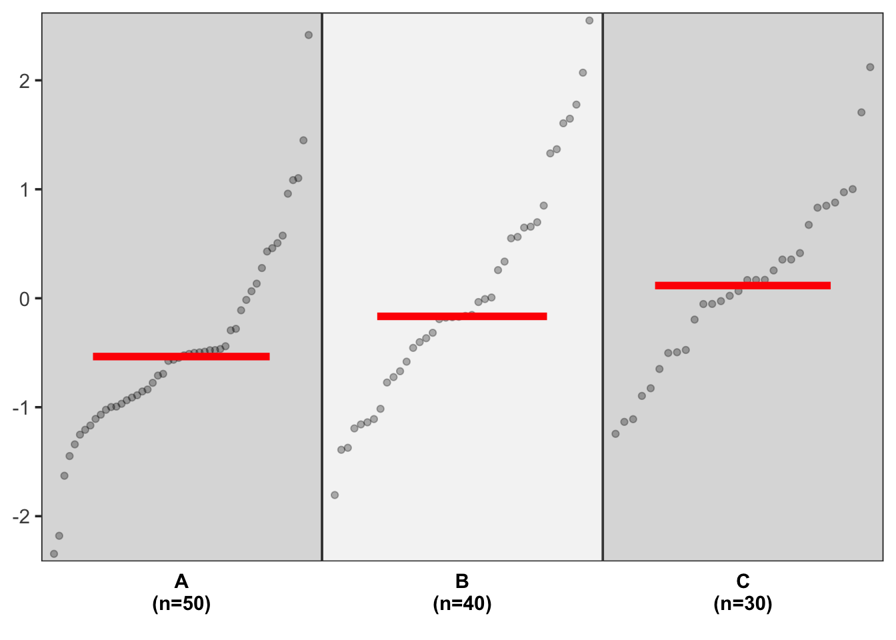
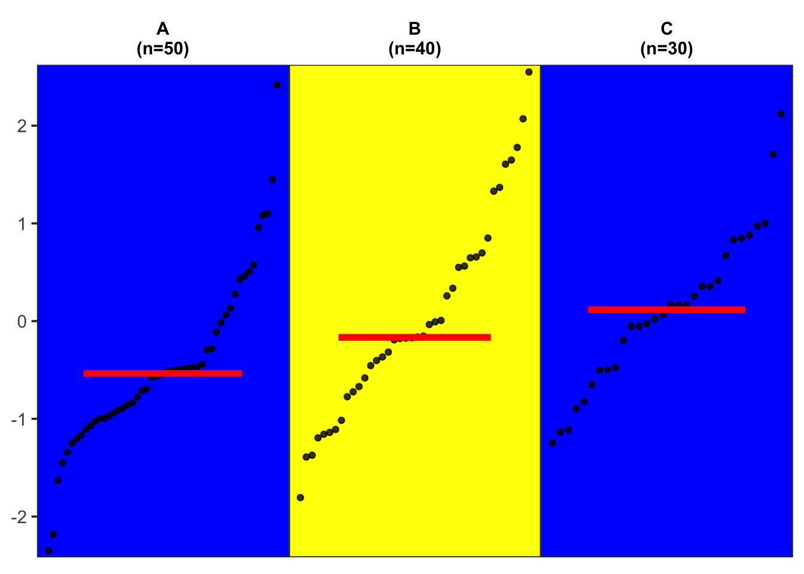

绘制分组排序点图
王诗翔 · 2020-09-04
我在看过的一些 Nature 文章和 COSMIC 数据库中看到用点图来展示不同癌症类型下 TMB 的分布差异。在 R 包中，我有看到过 maftools 中可以绘制这样的图，用来表示新的数据队列与 TCGA 数据的比较，这也是应用于 TMB 分析。因为研究问题，我最近也想尝试使用改种图形来展示数据。而且，该图可以拓展到任意可以适应的场景下，所以我想基于 ggplot2 来创建一个通用的绘图函数。

使用
如果读者仅仅想使用，请从 Gitee 上安装 sigminer 包，或者拷贝本文最后的函数：
remotes::install_git("https://gitee.com/ShixiangWang/sigminer")然后载入包：
library(sigminer)
#> sigminer version 1.0.16, run hello() to see usage and citation.下面是一个使用示例，通过构建一个示例数据进行绘图，展示如何传入分组变量和值变量、分组标签位置、排序以及点的透明度等：
set.seed(1234)
data <- data.frame(
yval = rnorm(120),
gr = c(rep("A", 50), rep("B", 40), rep("C", 30))
)
p <- show_group_distribution(data,
gvar = "gr", dvar = "yval",
g_position = "bottom",
order_by_fun = TRUE,
alpha = 0.3
)
p 图中的红色线段代表数据的中位数。也就是从图中我们可以看到每个具体排序后的样本值，以及整体的分布情况。
还可以根据自己的需求调整背景面板的颜色：
show_group_distribution(data,
gvar = "gr", dvar = "yval",
background_color = c("blue", "yellow")
)
源代码
目前该图的实现代码如下，代码通过 https://github.com/ShixiangWang/sigminer/blob/master/R/show_group_distribution.R 维护。
使用 ggplot2 实现这个图我遇到了不少难点，在实现的过程中除了深入理解了 ggplot2，我也同时感受到了它的灵活和限制。
难度有以下几点，感兴趣的读者不妨带着这些问题阅读源代码：
- 怎么对点排序，构建绘图坐标？
- 怎么对不同的 panel 展示不同的背景颜色？
theme()中的选项都不支持向量化，所以必须另辟蹊径。我尝试过geom_ribbon()和geom_area()来实现都不行。我最后使用了geom_rect()，我是怎么保证矩形画出来的填充跟背景效果一致的？ - 怎么保证图中的红线比例在不同的 panel 中一致？
- 怎么保证数据量只有 1-2 个这种情况也能画出图形？
#' Show Groupped Variable Distribution
#'
#' This is a general function, it can be used in any proper analysis.
#'
#' @param data a `data.frame`.
#' @param gvar a group variable name/index.
#' @param dvar a distribution variable name/index.
#' @param fun a function to summarize, default is [stats::median], can also be [mean].
#' @param order_by_fun if `TRUE`, reorder the groups by summary measure computed
#' by argument `fun`.
#' @param alpha alpha for points, range from 0 to 1.
#' @param g_label a named vector to set facet labels, default is `NULL`.
#' @param g_angle angle for facet labels, default is `0`.
#' @param g_position position for facet labels, default is 'top', can also
#' be 'bottom'.
#' @param xlab title for x axis.
#' @param ylab title for y axis.
#' @param nrow number of row.
#' @param background_color background color for plot panel.
#'
#' @author Shixiang Wang <w_shixiang@163.com>
#' @return a `ggplot` object.
#' @export
#'
#' @examples
#' set.seed(1234)
#' data <- data.frame(
#' yval = rnorm(120),
#' gr = c(rep("A", 50), rep("B", 40), rep("C", 30))
#' )
#' p <- show_group_distribution(data,
#' gvar = 2, dvar = 1,
#' background_color = "grey"
#' )
#' p
#' p2 <- show_group_distribution(data,
#' gvar = "gr", dvar = "yval",
#' g_position = "bottom",
#' order_by_fun = TRUE,
#' alpha = 0.3
#' )
#' p2
#' @testexamples
#' expect_is(p, "ggplot")
#' expect_is(p, "ggplot")
show_group_distribution <- function(data, gvar, dvar,
fun = stats::median,
order_by_fun = FALSE,
alpha = 0.8,
g_label = NULL,
g_angle = 0,
g_position = "top",
xlab = NULL,
ylab = NULL,
nrow = 1L,
background_color = c("#ECECEC", "#FAFAFA")) {
stopifnot(length(gvar) == 1L, length(dvar) == 1L)
data$.gvar <- data[[gvar]]
data$.dvar <- data[[dvar]]
d <- data %>%
dplyr::mutate(.order = dplyr::row_number()) %>%
dplyr::group_by(.data$.gvar) %>%
dplyr::arrange(.data$.gvar, .data$.dvar) %>%
dplyr::mutate(x = seq_len(dplyr::n())) %>%
dplyr::ungroup()
ds <- d %>%
dplyr::group_by(.data$.gvar) %>%
dplyr::summarise(
x_m = median(.data$x, na.rm = TRUE),
y_m = fun(.data$.dvar, na.rm = TRUE),
n = sum(!is.na(.data$.dvar)),
.groups = "drop"
) %>%
dplyr::transmute(
.gvar = .data$.gvar,
x = ifelse(.data$n > 3, .data$x_m - round(.data$n / 3),
.data$x_m - .data$n / 3),
xend = ifelse(.data$n > 3, .data$x_m + round(.data$n / 3),
.data$x_m + .data$n / 3),
y = .data$y_m,
yend = .data$y_m,
label = paste0(.data$.gvar, "\n(n=", .data$n, ")")
)
## Use rect fill colors to set panel colors
dp <- d %>%
dplyr::group_by(.data$.gvar) %>%
dplyr::summarise(
n = dplyr::n(),
xmin = min(.data$x, na.rm = TRUE),
xmax = max(.data$x, na.rm = TRUE),
ymin = min(.data$.dvar, na.rm = TRUE),
ymax = max(.data$.dvar, na.rm = TRUE),
.groups = "drop"
) %>%
dplyr::mutate(
xmin = ifelse(.data$n > 3, .data$xmin - (.data$xmax - .data$xmin) * 0.05,
.data$xmin - 0.5),
xmax = ifelse(.data$n > 3, .data$xmax + (.data$xmax - .data$xmin) * 0.05,
.data$xmax + 0.5),
ymin = min(.data$ymin) - (.data$ymax - .data$ymin) * 0.015,
ymax = max(.data$ymax) + (.data$ymax - .data$ymin) * 0.015,
ymin = min(.data$ymin),
ymax = max(.data$ymax)
)
if (order_by_fun) {
ds <- ds %>%
dplyr::arrange(.data$y) %>%
dplyr::mutate(.gvar = factor(.data$.gvar, levels = .data$.gvar))
d$.gvar <- factor(d$.gvar, levels = levels(ds$.gvar))
dp$.gvar <- factor(dp$.gvar, levels = levels(ds$.gvar))
}
b_colors <- rep(background_color, ceiling(nrow(dp) / length(background_color)))
if (is.factor(d$.gvar)) {
dp <- dp %>% dplyr::arrange(.data$.gvar)
}
dp$b_colors <- b_colors[1:nrow(dp)]
dp$b_colors <- factor(dp$b_colors, levels = background_color)
g_label <- ds$label
names(g_label) <- ds$.gvar
p <- ggplot(d) +
geom_rect(aes_string(
xmin = "xmin", xmax = "xmax",
ymin = "ymin", ymax = "ymax",
fill = "b_colors", color = "b_colors"
),
data = dp
) +
geom_point(aes_string(x = "x", y = ".dvar"), alpha = alpha, data = d) +
geom_segment(aes_string(x = "x", xend = "xend", y = "y", yend = "yend"),
data = ds,
color = "red",
size = 2
) +
scale_x_continuous(expand = expansion(mult = c(0, 0))) +
scale_y_continuous(expand = expansion(mult = c(0, 0))) +
scale_fill_manual(values = background_color) +
scale_color_manual(values = background_color) +
facet_wrap(~.gvar,
nrow = nrow,
scales = "free_x",
strip.position = g_position,
labeller = labeller(.gvar = g_label)
) +
theme_bw(base_size = 14) +
theme(
legend.position = "none",
axis.ticks.x = element_blank(),
axis.text.x = element_blank(),
strip.background.x = element_rect(color = "white", fill = "white"),
strip.text.x = element_text(
color = "black",
face = "bold",
angle = g_angle
),
panel.grid.major = element_blank(),
panel.grid.minor = element_blank(),
panel.spacing.x = unit(0, "line")
# panel.background = element_rect(fill = background_color)
) +
labs(x = xlab, y = ylab)
p$sampleOrder <- d$.order
p
}